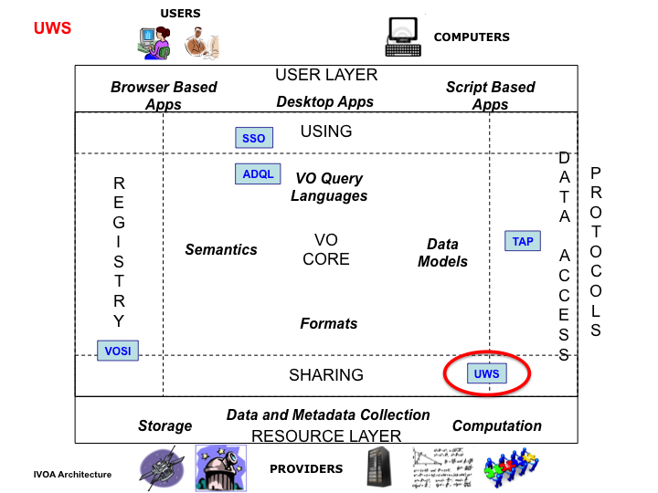

The Universal Worker Service (UWS)
pattern defines how to build asynchronous, stateful, job-oriented services (the italicised terms are defined
in sub-sections of this introduction). It does so in a way that
allows for wide-scale reuse of software and support from software
toolkits.
Section 2
of this document describes
the pattern and lists the aspects that are common to all its
applications. Any such application would involve a service contract
that embodies the pattern and fixes the issues left undefined in the
pattern itself (see section 1.3). The contract might include the XML schemata which form a "job description language" or JDL for the application, or simply a description of the input parameters for the service which are conveyed via typical HTML form encodings. It is intended that each such contract
cover a family of related applications, such that the implementations
may be widely reused.
Section 4 outlines several possible
applications of the pattern. These use-cases may be expanded into
full IVOA standards that are siblings of the current document.
Section 5 describes the preferred
method of creating a synchronous facade to a UWS system.
Simple web services are synchronous and stateless. Synchronous means that the client waits for
each request to be fulfilled; if the client disconnects from the
service then the activity is abandoned. Stateless means that
the service does not remember results of a previous activity (or, at
least, the client cannot ask the service about them).
Synchronous, stateless services work
well when two criteria apply.
-
The length of each activity is
less than the “attention span” of the connection.
-
The results of each activity are
compact enough to be easily passed back to the client via the
connection on which the request was made (and possibly pushed back
to the service as parameters of the next activity).
There are various limits to the
attention span.
-
HTTP assumes that the start of a
reply quickly follows its request, even if the body of the reply
takes a long time to stream. If the service takes too long to
compute the results and to start the reply, then HTTP times out and
the request is lost.
-
A client runs on a computer which
will not stay on-line indefinitely.
-
A network with finite
reliability will eventually break communications during an activity.
-
A service is sometimes shut down
for maintenance.
Synchronous, stateless services, in
short, do not scale well. The following examples illustrate situations in the VO in which synchronous, stateless services are inadequate.
-
An ADQL [std:adql] service gives access
to a large object-catalogue. Most queries run in less than a minute,
but some legitimate queries involve a full-table traverse and take
hours or days. The service needs to run these special cases in a
low-priority queue.
-
An object-finding service runs
the SExtractor [sextractor] application on a list of images. Normally, the list
is short and the request is quickly satisfied. Occasionally, a list
of 10,000 images is sent in the expectation that the work will be
finished over the weekend.
-
A cone-search [std:scs] request on a
rich catalogue raises 10,000,000 rows of results, but the client is
connected via a slow link and cannot read all the results in a
reasonable time. The client needs the service to send the results
into storage over a faster link. This could mean sending them to
VOSpace [std:vospace], or simply holding them temporarily at the service until the user can
retrieve them on a fast link. UWS provides a pattern for doing the latter.
-
An ADQL service allows users to
save query results into new tables such that they can be the target
of later queries. However, space is limited and the results tables
can only be kept for a short time. The client and service negotiate
the lifetime of the results tables.
-
A service performs image
stacking on a list of fields. Each field can be processed by a
synchronous service but the list is long and the user wants to
retrieve the results of the early fields before the last fields are
processed.
Services can be made to scale better
by making them asynchronous and stateful. Asynchronous
means that a client makes two or more separate requests to the
service in the course of one activity, and that the client and
service may be disconnected, possibly for days or more, in between
those requests. Stateful means that the service stores state
information about the activity and the client addresses requests to
this state.
Web services that are asynchronous
are almost always stateful. Most of the special extra arrangements for
asynchronous activities are actually managing the state of the
activity.
There is an important class of
stateful services where the state is peculiar to one job or session
and the job is “owned” by one user. These, for the purpose of
this document, are called job-oriented services. There are
stateful services that are not job-oriented (e.g. a service managing
a shared, client-writeable DB table), but UWS does not apply to
these.
For the purpose of this discussion,
let the term job refer to the work specified by the JDL
instructions and the term resource refer to the state of the
job as recorded by the service. Both have a finite duration. The lifetime of the resource – i.e. the time from inception
until the service forgets the state – is generally finite and must
be at least as long the duration of the job.
Consider the web-service operation
that starts off a job. This operation must express what is to be done
in the activity: it must carry parameters in some form.
The parameters may be expressed as a
list. For example, a cone search service takes a list of three parameters:
RA, DEC, RADIUS. Alternatively, the parameters may be arranged as an
XML document (e.g. CEA [harrison05]). The rules for setting and arranging
the parameters for a job are called the Job-Description Language (JDL).
The combination of the UWS pattern, a
JDL and details of the job state visible to the client defines a
service contract. Changing the JDL changes the contract. Thus, it is not
meaningful to “implement UWS” in isolation; any implementation
standard must specify the rest of the contract.
If the JDL is very general, a single
service-contract can be reused for many kinds of service. AstroGrid’s
CEA[harrison05]exploits this: one JDL covers all services offering parameterised
applications and even ADQL services. In the limit, a
sufficiently-general JDL turns a specialized worker service into a
universal worker service.

With the IVOA Architecture above, UWS is a VO infrastructure standard, being used by other standards and services to enable the development of VO applications managing asynchronous and stateless execution of jobs on VO services. Examples of such jobs include the case where the response must be computed, and that computation time takes longer than the normal expectation in an interactive web session. Additionally the UWS pattern allows a simple form of data sharing of the results of a job that is suitable for "workflow" situations and can be used by Data Access Services (currently Table Access Protocol [std:tap], but potentially by other DAL standards). It utilizes IVOA standards for security [std:ssoauth] if it is desired that a non-public UWS be created.
The UWS pattern leaves undefined two
essential parts of the service contract: the content that must be
posted to create a job; and the pattern of results made available by
a completed job. An application of UWS completes a service contract
by defining these matters.
There follow some use cases applying
the UWS pattern. The descriptions are neither formal nor complete.
The intention is to show a range of ways that the pattern can be
applied without burdening the reader with the level of detail needed
for a standard implementation.
Any of these cases could be worked up
into a full IVOA standard by formalizing the description, adding
detail and generally making the specification more
exact and complete.
Consider a service that computes
images from archive data. The computation takes significant time, so
the service is asynchronous. The service keeps the computed images in
its own storage until the user downloads them; this is essentially
the model of SIAP [std:siap].
The asynchronous image-service is a
logical extension of a synchronous SIA service. Therefore it uses the
REST binding of UWS.
The parameters for posting a new job
are as for SIAP 1.0:
-
POS, the position on the sky to
be searched.
-
SIZE, the size of the search
box.
-
FORMAT: the type of images to be
computed.
Particular implementations are free
to add extra parameters.
These parameters are posted in a
document of type application/x-www-form-urlencoded:
i.e. they can be sent from an HTML form.
The
images generated by the job are accessible as results. Each
image has its own URI and can be downloaded over HTTP at any time
until the destruction time of the job. The URIs for the images may be
discovered from the Results List in the normal UWS way.
SIAP
1.0 produces, for each query, a table of metadata describing the
images. The asynchronous image-service produces a table to the same
schema as a result with a fixed identifier, called “table”.
Image
results are added to the results list, and to the “table” result,
as they are generated. Hence, a client that polls the service can
discover, download and use some of the images before the job is
finished. If the client is satisfied with
these early images, the client can cancel the rest of the job by
destroying the job. However, destroying the job deletes the cached
images so the client has to download them first.
ADQL [std:adql] can serve as a JDL. Consider
an ADQL service that supports long-running queries as asynchronous
operations. In general, the results of the query may be a large set
of data. They may be too large to download comfortably. We might like
to cache these results on the service and to operate a cursor,
drawing down from the resource a few rows of the table at a time.
The parameters of a job are as
follows:
These parameters are posted in a
document of type application/x-www-form-urlencoded:
i.e. they can be sent from an HTML form.
A
successful query generates the following results:
-
table:
the whole result set as one file resource.
-
header:
the metadata for the output table.
-
cursor:
a selection of rows of output.
The cursor result is
parameterised by the query parameters FIRST and LAST in the query
string of its URI: these parameters state the index of the first and
last row to be returned; e.g.
http://whatever.org/adlqService/results/cursor?FIRST=1&LAST=100
If the parameters are missing, the
service decides which rows to return.
There is a class of applications on
which a job may be defined by a list of simple parameters. “Simple”
here means unstructured: a scalar value such as a number, a string of
text or a boolean value. If the parameters are allowed to be file name,
so that structured data are passed indirectly, then the class of
applications is very large indeed. Almost any non-interactive
application can be driven in this way.
Turning each application of choice
into a service (with or without UWS semantics) would be onerous.
However, if the application’s interface is entirely characterized,
through the JDL, in terms of typed input and output parameters, then
one service contract will work for all the applications and a single
implementation of the contract can be reused for all cases.
AstroGrid’s Common Execution
Architecture (CEA) [harrison05] works in this way. It has just one service
contract for all applications (including ADQL services; the ADQL
query is passed in the list of parameters). It has four
implementations, one for each of the possible interfaces between the
service and a kind of job (jobs can be implemented with Java classes,
command-line applications, HTTP-get services or JDBC databases). CEA
also specifies stateful, asynchronous services and makes use of
VOSpace.
Consider a CEA reworked to use the
UWS pattern for consistency with other (future) IVOA standards. Call
it CEA v2 to distinguish it from CEA v1 as currently maintained by
AstroGrid. For this example, consider the particular kind of CEA
service that runs applications supplied as executable binaries.
A binary application-server has a
library of applications co-located with its service and defined in
the service configuration set by the service provider. It does not
accept code from the client for local execution.
The JDL in CEA v2 is similar to that
in CEA v1. It is a formal XML vocabulary for expressing choice
of application and parameter lists [std:vocea]. Parameters may be inputs or
outputs of the job.
To start a job, a document in this
JDL is posted to the UWS. The document is sent in its native
MIME-type, application/xml, so this is not an interface that can be
driven directly from an HTML form, although it can be driven from the
other markup such as XForms technology[std:xform].
The results of the job depend on the
choice of application. They are all results whose identifiers and
types are defined in the definition of the application. That
application-definition is registered, so the client knows before
running the job what results to expect.
CEA input-parameters may be indirect:
i.e. they may refer to data in on-line storage. In this case, the JDL
document contains the URIs for those data objects Alternatively, the
parameters may be direct, in which case the JDL contains the actual
value of the parameters.
Similarly, CEA results may be made
indirect. In this case, the results are named as parameters in the
JDL where the values are the URIs to which the results are delivered.
The application server can then stream the results to the specified
destination as they become available and need not cache them locally.
If a job result is indirect, then the server can choose whether or
not to keep a local copy. If it chooses not to cache locally, then
the result URI in the UWS is set to the external location named in
the URI.
Whilst the provision of synchronous
services is not one of the design aims of the UWS pattern, there is
clearly a desire in second generation IVOA services still to allow a
simple synchronous calling pattern to be available to simple clients.
What follows is a recommended recipe for putting a synchronous facade
on UWS;
It is assumed that the core of the
service does provide a true UWS compliant set of endpoints rooted at
/async (equivalent to the /{jobs} endpoint in the nomenclature used
above). The desired synchronous service is to be rooted at /sync.
-
The job is started by either a
GET (for compatibility with existing IVOA standards) or a POST
(preferably) of form encoded parameters to the /sync endpoint.
-
Internally the service creates a
job in the standard UWS system with the given parameters and sets
the PHASE to RUN, noting the returned job identifier which we will
call {job-id}. The /sync endpoint then responds with a STATUS 303
(redirection) response to the URL /sync/{job-id}.
-
The /sync/{job-id} endpoint then
blocks until it detects that the underlying job has finished at
which point it responds with a STATUS 303 (redirection) to the
/{jobs}/{job-id}/results/mainresult URL, where “mainresult” is
the name of the primary result of the job.
In this way the service appears to be
a synchronous to the original client – assuming it obeys standard
HTTP redirection semantics, so a simple client like a web browser
could obtain the result with a single “click”. At the same time a
more sophisticated, UWS aware, client could control the same job from
the standard /{jobs} endpoint – indeed if the synchronous call
timed out for some reason, then it would be possible for the original
client to retrieve the results by looking at the /{jobs}/{job-id} URL
tree, because it could make the association of the job-Id from the
URL it receives in step 2 above.
The purely synchronous client is
restricted compared with the full UWS pattern in that there can only
be one result directly returned to the client, as noted in stage 3
above. This is usually not a problem for compatibility with existing
version 1.0 DAL services as they typically return a single VOTable
containing references to the desired data.